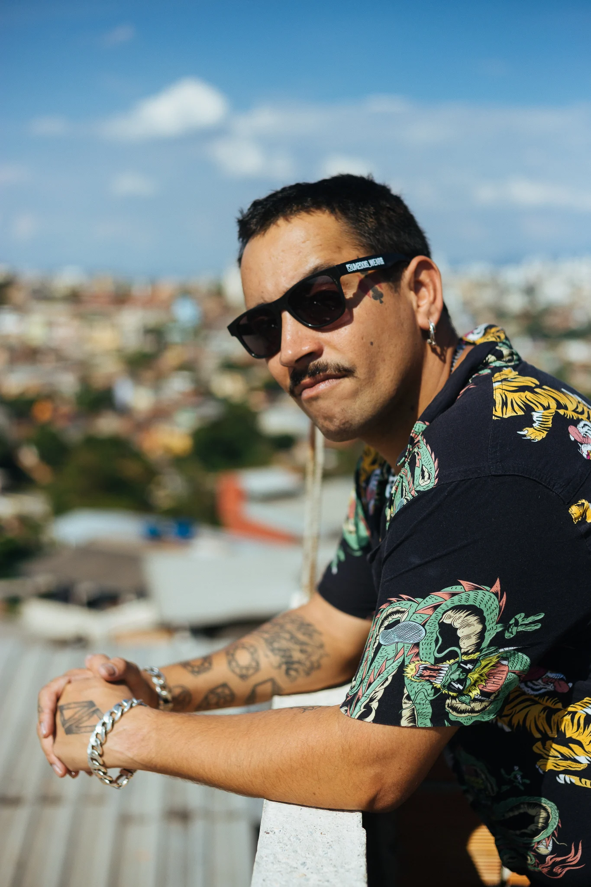
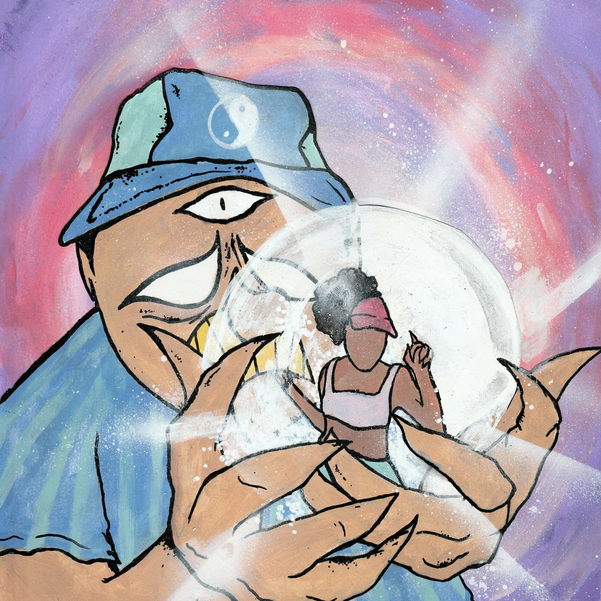
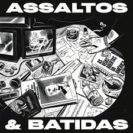
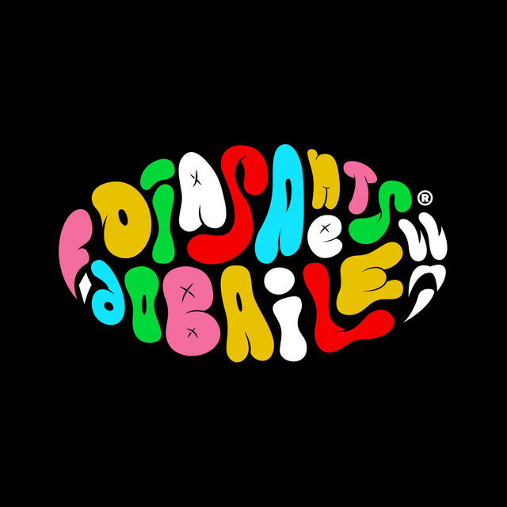
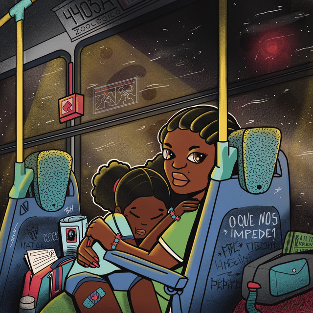
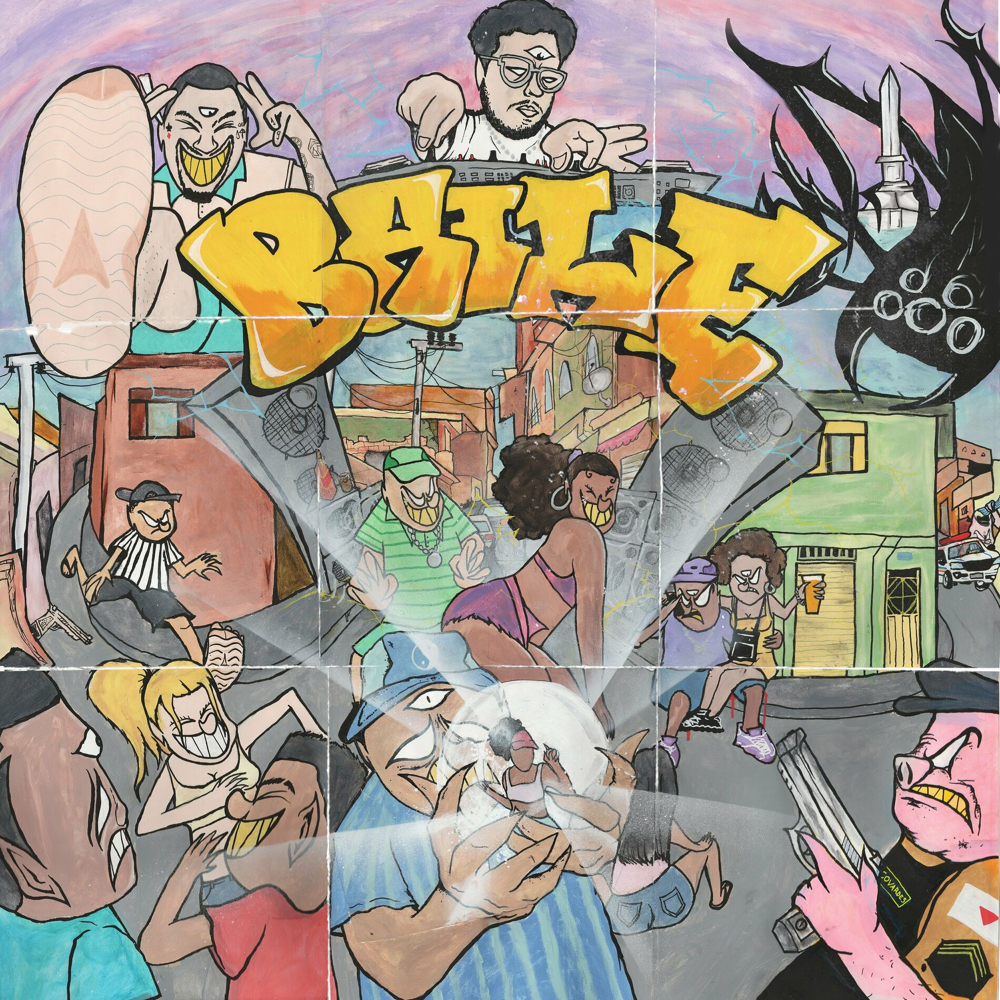
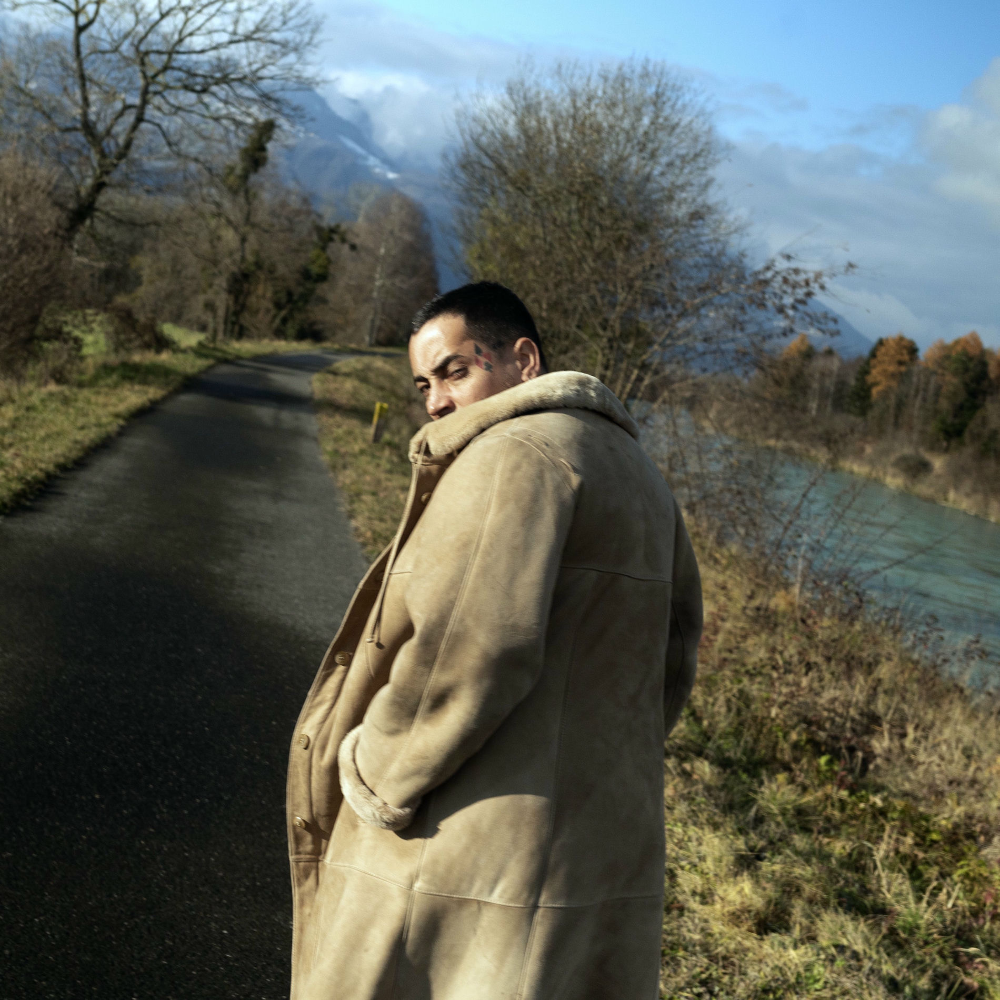

FBC
Rapper, Produtor Musical e Compositor
Popular

Delírios

Auto Ajuda

Cabana Terminal

Te Quero

Clareou

O Que nos Impede
Discografia

BAILE
Album · 2021

Outro Rolê
Album · 2019
Sobre
FBC é um artista de destaque no rap brasileiro, reconhecido por suas letras profundas e produções dinâmicas que capturam realidades urbanas. Além de sucessos como "Se tá solteira" e "De Kenner", ele se apresenta regularmente em shows e festivais por todo o Brasil, e suas colaborações com outros grandes artistas como Djonga, Don L e Ana Frango Elétrico enriquecem ainda mais o cenário musical..